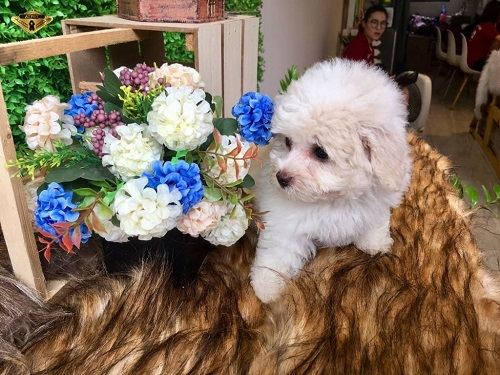

Chó Poodle (hay chó săn vịt) là giống chó chuyên dùng để săn các loại thủy cầm, chủ yếu là vịt. Chúng được biết đến trên khắp Tây Âu vào khoảng 400 năm trước, là hậu duệ của các giống chó French Water Dog, Hungarian Water Hound và Barbet. Cái tên “Poodle” xuất phát từ “Pudel” trong tiếng Đức, nghĩa là “thợ lặn”.
Ngày nay, giống chó lội nước này được lai tạo thành chó cảnh với hình tượng quý tộc, xinh xắn. Chúng được nuôi trong nhiều gia đình và rất được yêu thích trong giới thú cưng trên toàn thế giới.
Back